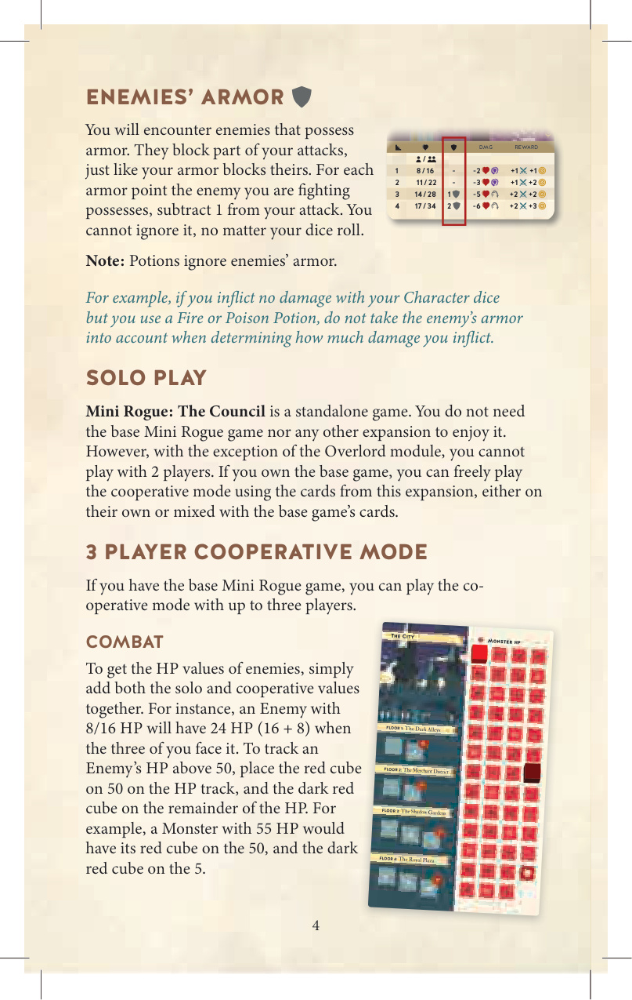
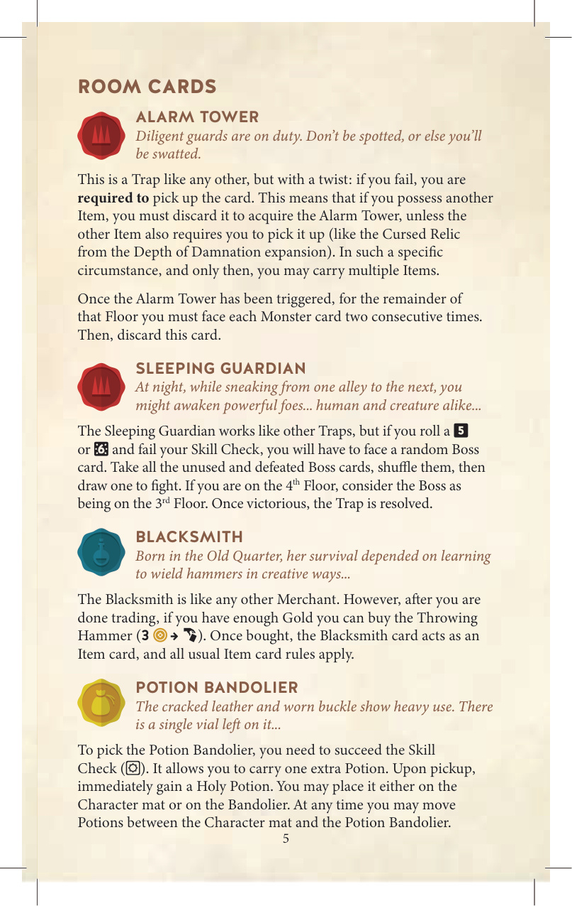
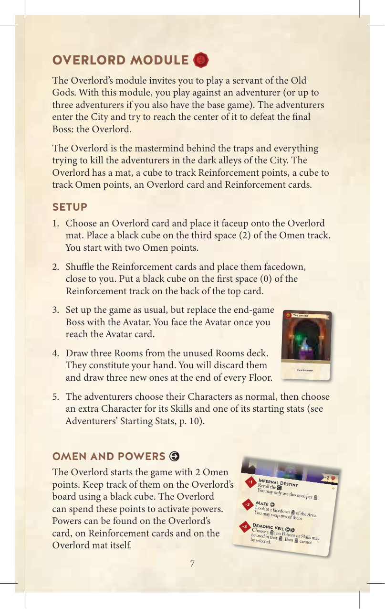
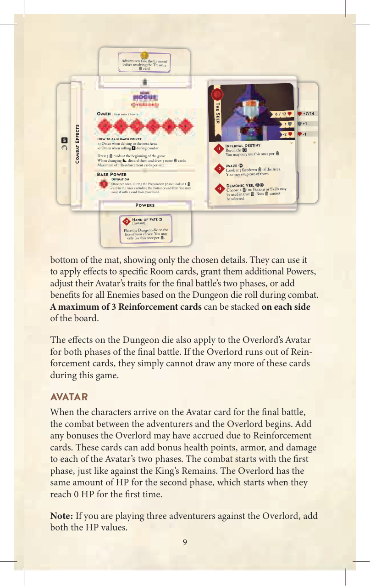

1概览 & 新图标
议事会是 Mini Rogue 的独立扩展。你可以独自玩，也可以与朋友一起对抗 霸主 模块。如果你拥有基础游戏 Mini Rogue，还可以 3 人合作玩，最多 4 人（含 霸主）。
新图标
抽 1 张传说卡并结算。结算后面朝上弃掉：本局不再抽取此卡。
敌人若掷出 5，附加 -3 h 攻击。
你同时面对 3 个当前敌人，需杀死 3 次。每次只剩敌人攻击时掷 1 次地城骰。当 1 个敌人被杀，超额伤害传给下一个。用方块追踪剩余敌人数。
敌人不能被药水针对。即使本次攻击中你没有受伤，此效果也适用。
失去 1 f；若无 f 则失去 1 h。
战斗中，投骰后先结算敌人的攻击，再结算你的攻击。
战斗中，敌人掷出 5 则闪避你的攻击（你的攻击未命中）。多颗角色骰时，只忽略最高值那一颗。
2敌人护甲
你会遇到拥有护甲（符号 a）的敌人。它会部分抵消你的攻击，正如你的护甲也能抵消敌人的攻击。每 1 点敌人护甲，你的攻击减少 1 点。无论你的骰子怎么掷，都不能忽略这层减免。
例：你用角色骰没有造成伤害，但用了火焰/毒素药水，结算药水伤害时不再扣减敌人护甲。
3单人 / 3 人合作 / 战斗生命值
单人玩法
议事会可作为独立游戏——你不需要基础 Mini Rogue 或其他扩展。但是，除了 霸主 模块外，不能 2 人玩。若拥有基础游戏，则可自由使用本扩展的卡牌进入合作模式。
3 人合作模式
若你拥有基础 Mini Rogue，可最多 3 人合作玩。
战斗生命值计算
敌人的生命值取单人值 + 合作值相加。例：敌人 8/16 生命值，3 人合作时为 24 生命值（16 + 8）。
4房间卡（5 张）
陷阱警钟塔
尽职的守卫在岗。被发现就完了。
这是普通陷阱，但多一个变化：失败时必须拿取此卡。如果你身上还有另一件物品，则必须丢弃它才能拿取警钟塔（除非另一件物品也要求你必须拿取，如《诅咒深渊》中的 诅咒遗物（诅咒遗物）。在那种特定情况下（且仅限那种情况），你可以携带多件物品。
警钟塔触发后，在本层余下时间，你必须将每张怪物卡连续面对 2 次。然后弃掉此卡。
陷阱沉睡守卫
夜里，从一条小巷溜到另一条时，你可能会惊醒强大的敌人——无论人或兽。
玩法同普通陷阱，但若你掷出 5 或 6 失败技能检定，必须面对一张随机大Boss 卡。将所有未用过与已击败的 大Boss 卡 洗混，抽出 1 张战斗。如果你在 4 楼，把大Boss 视作 3 楼。胜利后陷阱结算。
商人铁匠
在老城区长大，她用创意的方式挥锤求生。
铁匠与普通商人相同，但交易完成后，若你有足够金币可买投掷锤（3 金 → I，物品）。买下后，铁匠卡视作物品卡，适用所有普通物品卡规则。
物品药水束带
破裂的皮革与磨损的搭扣显示这是常用装备。还剩最后一个小瓶……
拿取药水束带需要通过技能检定（(s)）。它允许你多携带 1 个药水。拿取时立即获得 1 个圣水，可放在角色板或束带上。随时可在角色板与束带之间移动药水。
束带上的药水被消耗时，不要丢弃束带。普通物品卡规则仍适用。
物品暗黑法典
隐约的呼啸声，像来自另一个维度的风透过书页的缝隙吹到这里……
拿取暗黑法典需要通过技能检定（(s)）。否则不能拿取，且损失 1 诅咒。
5与基础游戏组合
议事会与所有 Mini Rogue 扩展完全兼容。经验法则：你可以把所有的房间卡、所有的大Boss 卡、所有的角色卡混合在一起使用。
若想要随机性更低的局，可以从所有房间卡中精选：4 张怪物、4 张陷阱、4 张古墓、3 张物品、2 张宝物、2 张商人、1 张篝火、1 张神龛。
可以从 Og 的遗骸（Og 的遗骸）与 王之遗骸中任选最终大Boss；可以随机抽 1 张制造悬念。
可以在 鬼魂与 罪犯参考卡中任选（准备时直接选 1 张，或在不同局交替使用）。参考卡的奖励面同理。
6霸主 模块
霸主模块邀请你扮演旧神的仆人。你将对抗 1 位（或最多 3 位，使用基础游戏时）冒险者。冒险者进入城市，试图抵达中心击败最终大Boss：霸主。
霸主 是一切陷阱与黑暗小巷中试图杀害冒险者的事物的策划者。霸主 拥有个人板、预兆方块、强化方块、霸主 卡与强化卡。
准备
- 选择 1 张 霸主 卡，面朝上放在 霸主 板上。黑色方块放在预兆轨道的第 3 格（2 点）——起始 2 点预兆。
- 洗混强化卡，面朝下放在你身旁。把黑色方块放在最上面那张卡的强化轨道的第 1 格（0 点）。
- 按常规设置游戏，但把终局大Boss替换为 化身（化身）。抵达 化身 卡时即面对 化身。
- 从未使用的房间牌堆中抽 3 张房间作为你的手牌。每层结束时弃掉它们，重新抽 3 张。
- 冒险者按常规选择角色，再额外选一张角色卡以获得其技能 + 1 项起始属性（详见 §12）。
7预兆与力量
霸主 起始有 2 点预兆。用黑色方块在 霸主 板上追踪。霸主 可消耗这些点数来激活力量。力量出现在 霸主 卡、强化卡、以及 霸主 板本身。
霸主 每次冒险者 深入时获得 3 点预兆，每次战斗中地城骰掷出 1 时获得 1 点。预兆最多 5 点。
霸主 可随时使用力量（支付预兆并结算）。如果力量指定了使用时机，则只能在那个时机使用。
基础力量
- 占卜：一次/区域。准备阶段预览区域中 1 张房间卡（入口与出口除外），可选择与手牌交换。
霸主 卡上的力量
- 灾厄命定o：重掷地城骰。每区只能用 1 次。
- 迷宫o：查看区域中 3 张面朝下的房间，可交换其中 2 张。
- 魔魅之幕oo：选 1 个房间：本次战斗不可用药水与技能；大Boss 房间不能选。
8地城骰（地城骰，符号 D）
任何需要掷 地城骰（符号 D）的时候，都由 霸主 掷。对抗多位玩家时，霸主 必须在掷之前宣布为谁掷骰。
9房间之主
霸主 起始抽 3 张房间作为手牌。利用一次/区域的 占卜 力量（准备阶段），可预览区域中的 1 张房间（入口与出口除外），并选择与手牌交换。这让 霸主 战略性地把难房间放到冒险者的路径上，或移除有利的房间。
每层结束时，霸主 弃掉所有手牌，重新抽 3 张。
10强化卡
霸主 每次使用带 o 或 oo 的力量时，把强化方块（黑色）向右移动 1 格或 2 格，对应符号数。当方块到达最后一格（V）时，霸主 翻开强化牌堆最上面一张卡，并把方块放到该卡强化轨道第 1 格。剩余点数可带到下一张卡。
翻开强化卡后，霸主 必须立即使用它，放在板下方（上/左/右/下），只露出选定细节。可用它：
- 对特定房间卡施加效果（如 腐臭吐息 在探索阶段对下个房间所有玩家施加 -2 h）
- 获得额外力量（如 命运之手：把地城骰放在你选的面上，每区只能 1 次）
- 调整 化身 的属性（最终战两阶段）
- 为战斗中所有敌人增加效果（基于地城骰）
- 或对房间内敌人叠加效果（如 毒气、执拗）
地城骰的效果也作用于 霸主 的 化身（最终战两阶段）。若 霸主 用尽强化卡，则本局不能再抽。
11化身
当冒险者抵达 化身卡开始最终战，与 霸主 的战斗开始。加上强化卡带来的奖励（生命值、护甲、伤害）。
战斗从第一阶段开始（类似 王之遗骸）。霸主 的第二阶段生命值与第一阶段相同，当第一阶段生命值降到 0 时进入第二阶段。
霸主 可在最终战使用其 霸主 卡与强化卡的力量（但需支付预兆）。强化轨道上的进度在最终战忽略。
12冒险者起始属性
游戏开始时，冒险者获得一点小奖励：每位冒险者选择 1 张未被选走的角色卡，从中选1 项属性加到自己的起始属性上。它会替换你角色对应的那一项属性。药水也算起始属性。
【示例】你有 疫医（疫医，2 金），选 捕鼠人 的 5 金加入起始属性。捕鼠人 的金币会替换疫医的金币。最终属性：13 h, 5 金, 3 f, 9。
示例角色（疫医 / 捕鼠人）的技能
- 疫医
- 配药（配药，战斗）：你所在房间内一个中毒的敌人可失去 1 h 来获得 1 个毒素药水。
- 放血疗法（放血疗法，探索）：你所在房间内一个敌人获得 5 h 并中毒。
- 捕鼠人
- 鼠饵（鼠饵，战斗）：失去 1 f 以在本战斗序列中多掷 1 颗角色骰。
- 猎捕（猎捕，探索）：结算下一房间内的怪物或陷阱后，额外获得 1 f 作为奖励。
将第二张角色卡滑入你的角色卡下方，只露出技能。今后可分别使用两套技能——每次用技能时，只把那张卡翻为面朝下。现在可以用 2 个技能再刷新。刷新时两张卡都翻回面朝上。
额外的角色卡不给你额外的 角色职业（传说卡用途）。
13新手冒险者 / 自动模式
新手冒险者
当 霸主 对抗新手冒险者时，建议给其中一位奖励：每次 大Boss 战后，让一位冒险者结算 奖励卡两次（霸主 重新掷地城骰）。获得额外奖励的冒险者每战可换。所有冒险者协商谁拿。
自动模式
这是一种无人扮演 霸主的自动玩法。按常规规则，但做以下调整：
- 设置时，选 1 张 霸主 卡翻到其 自动模式侧（A）。
- 每位玩家选 1 张未用的角色卡，滑入自己的角色卡下方（同 §12 起始属性）。
- 霸主 既不获得也不消耗预兆，且不持有手牌。改为查阅 霸主 卡上的图标，决定是否触发力量（依据房间类型与当前阶段）。
- 例如玩 先知 霸主 时，每次遇到 怪物卡，霸主 触发 魔魅之幕：强化方块右移 2 格，再应用力量本身的效果。
- 若力量显示 o 或 oo，先按符号数右移强化方块，再结算力量效果。
- 若方块到最后一格（V），翻开强化卡，掷地城骰，按 霸主 卡右上角的骰面图标，决定放在 霸主 板的哪一侧（最多 3 张/侧 不适用）。剩余点数可带到下一张卡。
- 结算完强化卡后，应用对应房间卡的力量。
14传说卡
传说卡是 Mini Rogue 叙事世界的小小插曲，常给玩家提供选择或独特情境。准备时洗混所有 传说卡，组成面朝下的 传说牌堆，放在房间牌堆旁边。
结算 传说卡：抽出最上面 1 张，阅读故事，然后从可选选项中选 1 个。部分选项会标注角色 token 符号——这意味着该选项只能由对应职业的角色执行。
- 故事：先读这段。
- 选项：只能选 1 个。选定后，按右侧栏更新自己的属性。
- 职业限定：只有角色符号对应的职业能选。
- 技能检定：带检定的选项要投骰结算。成功 / 失败结果会在下方列出。
更多 传说卡可在《诅咒深渊》扩展与各种 promo 包中找到；拥有的话可以全部洗混作 传说牌堆。
15制作信息
游戏设计：Paolo Di Stefano、Gabriel Gendron
系列：Mini Rogue（独立扩展 议事会）
本规则书以英文版 Mini Rogue: 议事会 — 附加规则（compressed 版）为权威源。专有名词（游戏名、扩展名、角色类、卡牌专名、能力名、设计师、出版商）首次出现时附中文括注；普通术语（生命值、骰子、药水、技能检定、强化、预兆等）直接译为中文。



